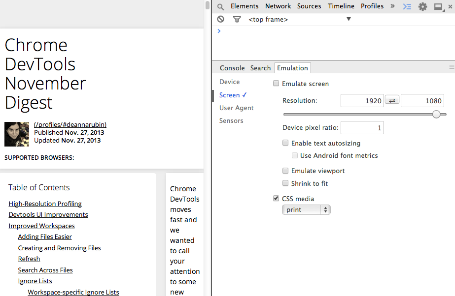

Enabling Device Mode
To enable device mode, press the Toggle Device Mode button  .
When device mode is enabled this icon will turn blue
.
When device mode is enabled this icon will turn blue  .
This adds a simple overlay to the viewport.
.
This adds a simple overlay to the viewport.

The web has evolved to enable complex applications across a wide variety of devices. This has increased complexity in debugging during development. The DevTools includes many features to aid the process.
To enable device mode, press the Toggle Device Mode button  .
When device mode is enabled this icon will turn blue
.
When device mode is enabled this icon will turn blue  .
This adds a simple overlay to the viewport.
.
This adds a simple overlay to the viewport.
Emulating different screen resolutions is essential to responsive design. These settings allow you to set the exact width and height (in pixels) of the target. In addition to resolution, you can also set the pixel ratio of the target device.
You can emulate the device pixel ratio which is useful for when you don't have a retina device to test on.
Also media queries such as @media only screen and (min-device-pixel-ratio: 2) can be tested.

If you are testing a resolution that your monitor is not big enough for then fit viewport is available. This will scale the emulated viewport down to fit on your monitor.

One key aspect for the responsiveness of a site is its performance. Remember that users visit from a variety of networks. Fear not, the DevTools offers network throttling. Now you can test your site against different network conditions and optimize for them.
Network conditioning does bandwidth throttling and latency manipulation. The bandwidth is how much speed the client has to talk to the server while latency is the delay in connection. This can be set in the controls through the network dropdown. You can set the UA string to test different server responses.

A critical part of implementing responsive sites is using media queries.
The DevTools provide two aids in helping you see the different places being targeted.
You may see orange indicators  in the horizontal ruler which signifies a break point.
The media queries button
in the horizontal ruler which signifies a break point.
The media queries button  on the left will bring up a panel that displays a bar for each query detected in your stylesheets.
If you click on one, the resolution setting will be configured to display that query.
on the left will bring up a panel that displays a bar for each query detected in your stylesheets.
If you click on one, the resolution setting will be configured to display that query.

No one wants to set the UA string by hand or change the resolution all the time. For this reason, there are a variety of device configurations built in. These will do the following:
To clear the set configurations, just click the aptly named clear all overrides button  on the left.
This will reset everything to no emulation, remember to refresh the page also.
on the left.
This will reset everything to no emulation, remember to refresh the page also.
To get more precise controls over the emulations taking place, access the emulation drawer.
You access this by pressing the ellipses button  in the bottom right corner of the controls.
This will bring up the emulation panel in the drawer.
in the bottom right corner of the controls.
This will bring up the emulation panel in the drawer.

The overrides available in the devices pane offers two options over the primary controls. These are text autosizing and mobile emulation. Text autosizing boosts the font as mobile devices do.
Mobile emulation does a few things.
Primarily, it zooms the page out to the physical default viewport of the device.
Then it makes the scrollbars overlays as seen on mobile devices.
Values such as window.screen are in CSS pixels.
Finally, the default body width is set to 980 pixels.
The media pane offers a quick way to emulate different CSS media types. This allows you to easily test the various types right in the main viewport.
The sensors pane allows the emulation of sensors uncommon to desktops. These include touch events, geolocation, and device orientation data.
Touch emulation allows the triggering of touch events using the mouse. Only single points are emulatable unless you have a device that supports multi-touch. For more information on multi-touch emulation, check out HTML5 Rocks. While emulating touch events, the cursor will change and look like a small circle to emulate a fingertip size.
Tip: Shift and drag using the mouse will emulate "pinch".
You can emulate coordinates for the Geolocation API.
The DevTools support both overriding position values for navigator.geolocation and simulating geolocation not being available.
Finally emulation of the device orientation sensors for use with the Orientation API. To emulate the values the API calls will recieve, you can manipulate the paramters as follows:
Note: If you have JavaScript that checks for sensors onload (such as modernizr) then you will need to reload the page for those to trigger.
As powerful as the DevTools are, there are some things that currently aren’t emulated. Some examples are:
<select> elements are not emulated as a modal list.Paul Bakaus gave a talk at Google I/O 2014 going in depth with device mode.
The emulation overrides complement remote debugging. The emulated sensors will override the device’s native sensors. Remote debugging also allows for testing against actual device specifications, such as CPU and GPU limits.

You may also monitor touch events as they fire on an element in the console.
Use monitorEvents from the command line API:
monitorEvents(document.body, 'touch')
Multi-touch events can be simulated if you have a device with touch input, such as a modern Apple MacBook. For further assistance with multi-touch event simulation, see the "Developer tools" chapter of the Multi-touch web development guide on HTML5 Rocks.

| Before: | After: |
 |
 |

If you check “Emulate position unavailable” and refresh then you will see that the location lookup as failed.

This alters the left/right tilt and front/back tilt. In this case resulting in our application being emulated as rotating in a clockwise direction.

| Before: | After: |
 |
 |